Why should you adopt?
Adopting a new pet is a great choice! By adopting, you provide a loving home to a deserving animal in need and contribute to reducing the number of homeless pets. Additionally, you will enrich your own life as pets offer companionship, unconditional love, and a sense of purpose.
Take this opportunity to adopt!
We currently have 10 available animals waiting for their forever homes. Take a look at our gallery here on this page and read a short bio on each animal. With such a variety, you are bound to fall in love with atleast one of our prvoided animals.
Interested in one of our animals?
If you are looking to learn more how to adopt one of our available animals, please contact us as soon as possible! The animal you are interested in may be taking interest of many others. We are able to receive your request by email, phone, or in person. Head over to our contact tab to learn more.
 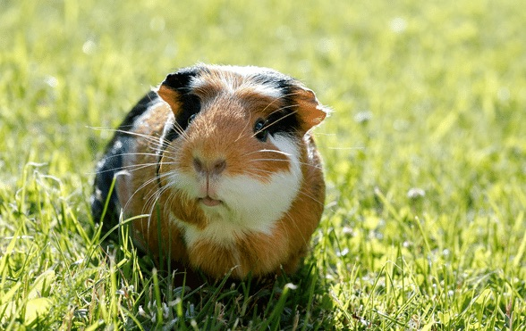
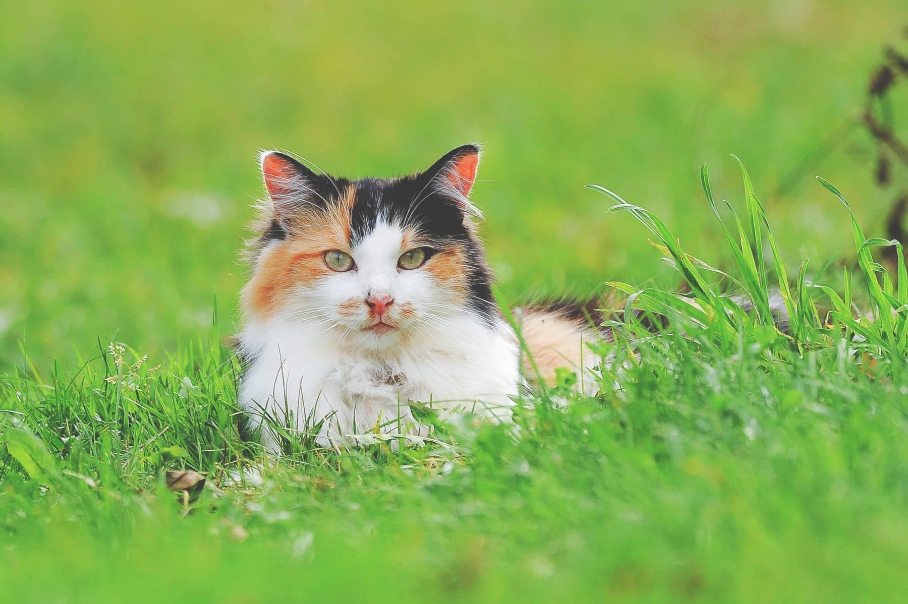
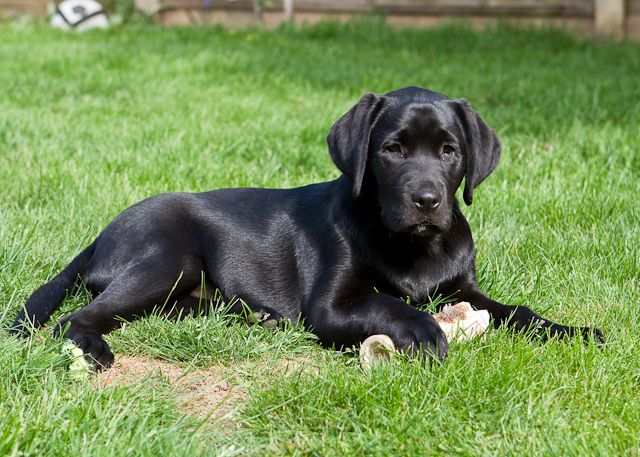
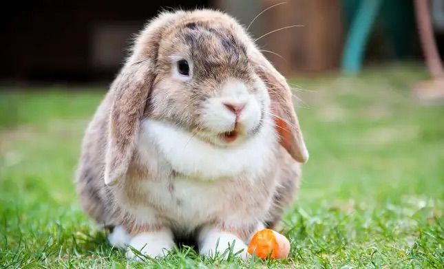
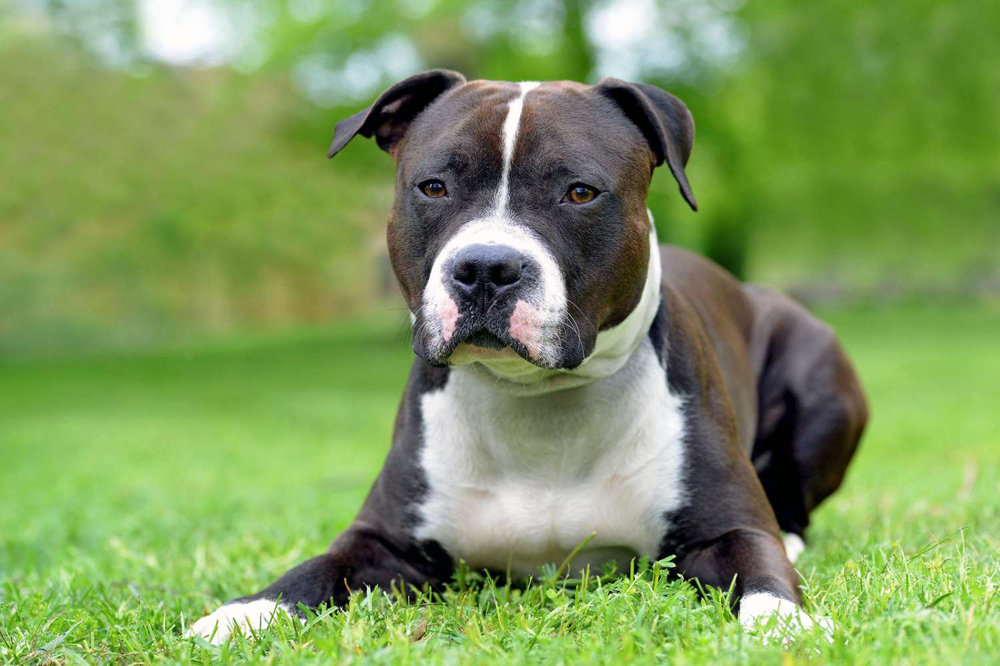
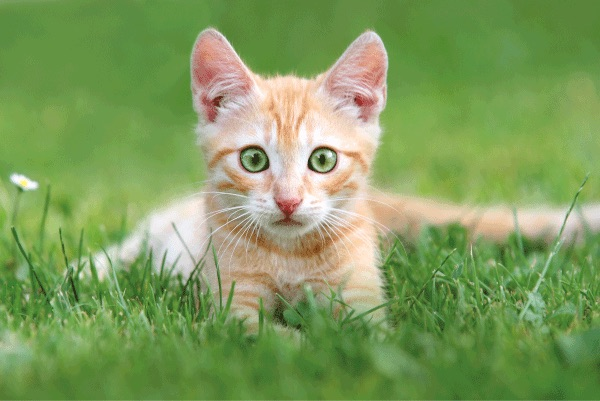
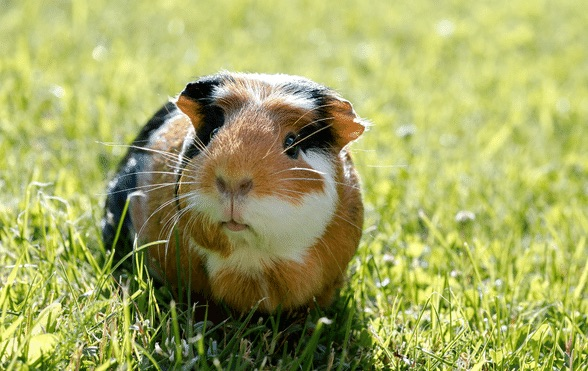
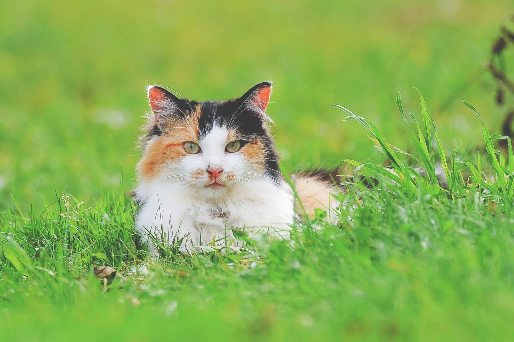
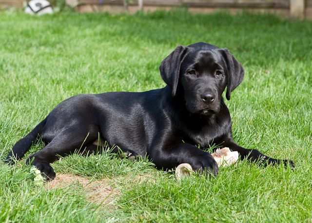
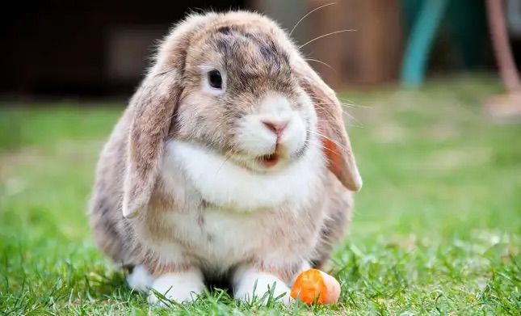
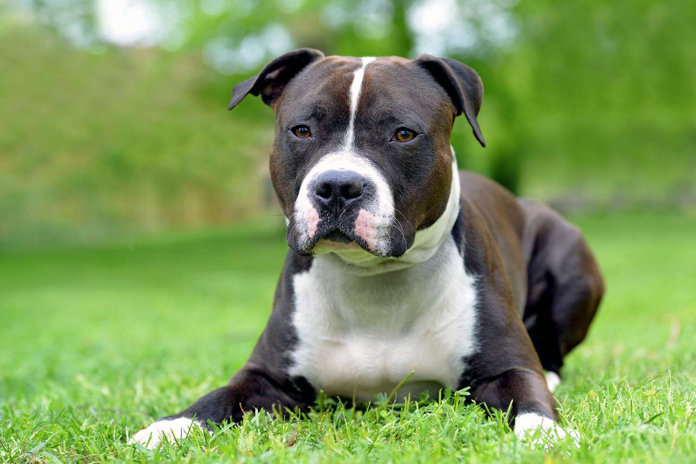
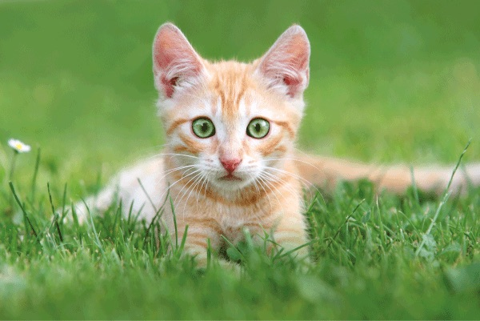